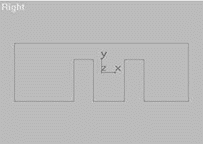

|
|
| 当前位置：电脑报电子版 > 1999 年 > 38 期 > OA专刊 > 3Dmax风光无限（上）——室内效果图制作实例 |
| 《 3Dmax风光无限（上）——室内效果图制作实例 》 |
走廊的墙面造型 在这里我们要介绍的是两排房间中间的走廊墙面造型，主要是如何在墙面中嵌入门的造型。首先重新设定系统，然后我们进行墙面主体的造型。 1单击创建命令面板上的“平面”按钮，再单击其下的“矩形”按钮。 2在右视图中创建一个矩形，在创建命令面板上修改其“长度”值为300，“宽度”值为900。 3再在右视图中创建两个矩形，分别修改它们的“长度”值为220，“宽度”值为100。 4在右视图中，利用“移动”按钮调整三个矩形至图一所示的位置。 因为我们下面要对这三个矩形进行布尔运算，所以，大家要注意图一中的两个小矩形的下边须略低于大矩形的下边，而不要与之重合或高于大矩形的下边，否则，进行布尔运算时会出现错误。 5在视图中选择大矩形,单击命令面板上的“修改”按钮。 6单击修改命令面板上的“编辑样条曲线”按钮，再单击其下的“子对象”按钮，然后将它关闭。 7单击修改命令面板上的“连接”按钮，在右视图中，分别单击两个小矩形，将视图中所有的矩形连接起来。 8在修改命令面板上，单击“子对象”按钮，将它打开。在它右侧的小窗口中，选择“Spline”选项。 9在右视图中单击大矩形并选择。 10在修改命令面板“编辑样条曲线”类下单击“布尔减”按钮，再单击其下的“布尔运算”按钮。 11然后在右视图中，分别单击两个小矩形，最后产生的平面造型如图二所示。 12单击修改命令面板上的“子对象”按钮，将它关闭。 13单击修改命令面板上的“拉伸”按钮，将其下的“数量”值调整为30。 14在修改命令面板上将此墙面主体造型命名为“Wall01”。 现在的“Wall01”造型好像一把只有三个齿的梳子，下面我们要创建三个方体分别放置在这把“三齿梳”的三个“齿”上，作为走廊墙面的墙围部分。为了叙述方便，在下面的内容中，我们就用“齿”来表示墙面主体下端的三部分墙面。 15单击“创建”按钮，再单击其下的“立体”按钮。 16在右视图中创建一个方体。在创建命令面板上修改“长度”值为110，“宽度”值为230，“高度”值为31。 17在右视图中，利用工具行中的“移动”按钮，调整方体至如图三所示的位置。 此方体的“长度”值和“高度”值是固定的，但其“宽度”值要比墙面最右侧的“齿”的宽度略大，使它紧包在右侧的“齿”的外缘。这就可能会因为前面小矩形放置的位置有一定差别而略有不同。大家在创建时，可根据实际情况调整你的方体的“宽度”值。下面两个作为墙围的“宽度”值也是如此，我们就不再赘述了。 18再在右视图中创建一个方体。在创建命令面板上调整“长度”值为110，“宽度”值为160，“高度”值为31。 19在右视图中，利用工具行中的“移动”按钮，调整第二个方体至图四所示的位置。 20我们再在右视图创建一个方体。在创建命令面板上调整“长度”值为110，“宽度”值为305，“高度”值为31。 21在右视图中，利用工具行中的“移动”按钮，调整第三个方体至如图五所示的位置。 22在视图中同时选择三个方体。 23单击下拉式菜单中的“成组”命令，在弹出的对话框中，修改“成组名称”为“QiangWei01”，单击“确定”按钮。 下面我们在墙面上嵌入门的造型。 24在右视图中创建一个方体，在创建命令面板中修改“长度”值为220，“宽度”值为100，“高度”值为25。 25在右视图中，利用工具行中的“移动”按钮，调整方体至如图六所示的位置。 26在创建命令面板上修改名称为“Door01”。 27在右视图中按住键盘上的“Shift”键，利用工具行中的“移动”按钮，锁定X轴方向，再复制一个方体。系统默认名为“Door02”。 28在右视图中调整此方体至图七所示的位置。 现在一侧的墙面造型就已经完成了，下面我们来复制此墙面对面的墙面造型。 29在视图中，同时选择所有造型。 30在顶视图中，按住键盘上的“Shift”键，利用工具行中的“移动”按钮，锁定X轴方向，复制出另一侧的墙面。 31在顶视图中，利用“对齐”按钮，将新复制出的墙面造型沿X轴制作镜像。 下面我们来创建走廊另一侧墙面的造型。  32在前视图中创建一个方体造型，在创建命令面板上起名为“Wall03”。 32在前视图中创建一个方体造型，在创建命令面板上起名为“Wall03”。33在创建命令面板上修改“长度”值为300，“宽度”值为700，“高度”值为30。 34在视图中调整三侧墙面造型的相对位置图八所示。 35再在前视图中创建一个方体，在创建命令面板上起名为“QiangWei03”。 36在创建命令面板上修改“长度”值为110，“宽度”值为700，“高度”值为31。 37在视图中调整“QiangWei03”造型至图九所示的位置。 38保存此文件为“Wall01max”，以备今后调用。 走廊墙面材质编辑 建立好走廊墙面造型后，下面我们来给它赋上材质，以达到逼真、美观的效果。39单击菜单中的“文件/打开”命令，打开我们前面所保存的“Wall01max”文件。 40利用工具行中的“按名称选择”按钮，同时选择视图中的“Wall01”、“Wall02”、“Wall03”造型。 41单击工具行中的“材质编辑器”按钮。 42在弹出的“Material Editor”对话框中选择第一个示例窗。 43在“Material Editor”对话框中“基本参数”类下，将此材质“漫反射”色块调整为纯白，“环境”色块调整为浅灰色，“自反光强度”值调整为30。 44将此材质赋予场景中被选择的物体。 45利用工具行中的“按名称选择”按钮，同时选择视图中的“Door01”至“Door04”造型。 46在“Material Editor”对话框中选择第二个示例窗。 47修改“基本参数”类下的“自反光强度”值为40。 48此材质采用“RGB Tint”贴图，贴图文件选用“MMTIF”，这是一幅木质门的贴图。（如果大家没有本例中用到的贴图文件也不要紧，可以暂时用其他类似的图片代替。） 49在选择好贴图文件后，单击“回到上一级材质”按钮。 50在“Material Editor”对话框“染色参数”类下，通过调整“R”、“G”、“B”色块的颜色，将此材质调整为暗红色。 51在“Material Editor”对话框中，单击“回到上一级材质”按钮。单击其下的“贴图”长按钮将其下的选项展开。 52在“贴图”类下，将与“漫反射”相对应的“Map”按钮拖曳于与“凹凸”相对应的“Map”按钮处。 53在弹出的对话框中，点选“复制”方式，单击“确定”按钮。 54将此材质赋予场景中被选择的物体。 最后我们给墙围赋上材质。 55利用工具行中的“按名称选择”按钮，同时选择视图中的“QiangWei01”至“QiangWei03”造型。 56在“Material Editor”对话框中，选择第三个示例窗。 57在“Material Editor”对话框“基本参数”类下，修改“自反光”值为45，“自反光强度”值为60。 58此材质采用“Bitmap”贴图，贴图选用“ROSEWOODJPG”文件，这是一幅横向木纹贴图。 59在选择贴图文件后，将“Material Editor”对话框中“坐标”类下“角度”对应的“U”值调整为90。此时第三个示例窗中显示为纵向木纹材质。 60将此材质赋予场景中被选择的物体。 61渲染透视图，其效果如图十所示。 62单击菜单中的“文件”/“保存”命令，保存我们所做的修改。 至于走廊墙面材质，和一些室内装修常见的吊顶造型、材质编辑等，我们将会在第40期向大家刊出。 （特约撰稿人 高志清 宋雪岩） |
| 下载本期推荐软件 | 页 首 |
| 《电脑报》版权所有，电脑报网站编辑部设计制作发布 |